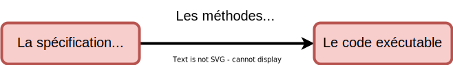

Développement de systèmes critiques
avec la méthode Event-B
Présentation de l'électif
3A cursus ingénieurs - Mention Sciences du Logiciel
CentraleSupelec - Université Paris-Saclay - 2025/2026
CentraleSupelec - Université Paris-Saclay - 2025/2026
Idir AIT SADOUNE

-
2010 - Docteur en Informatique diplômé par l'ENSMA.
-
Thèse sur la
modélisation et la vérification des services
par une approche utilisant le raffinement et la preuve.
-
Thèse sur la
modélisation et la vérification des services
-
Enseignant au sein du département informatique
de CentraleSupelec - Université Paris-Saclay. -
Chercheur membre des pôles Modèles et Preuve
du LMF - Laboratoire Méthodes Formelles.
Le logiciel informatique


Cycle de développement


Des erreurs possibles à toutes les étapes du développement.
Logiciels critiques
-
Une défaillance dans un logiciel peut avoir
des conséquences
catastrophiques (humaines, financières, ...). - Exemple du calculateur de bord d'Ariane 5

Situations à éviter !!!


Solutions
- Les règles et les techniques de programmation.
- Le support des langages de programmation.
- Les méthodologies de conception
et de développement. - Le test.
-
Les méthodes formelles
- méthodes d'ingénierie basées sur
des approches mathématiques utilisées pour développer
et analyser des systèmes (logiciels). - démarche globale (langages et outils
de vérification).
- méthodes d'ingénierie basées sur
des approches mathématiques utilisées pour développer

La place des méthodes formelles


Utiliser les méthodes formelles dans toutes les étapes.
Objectif des méthodes formelles
- Aider les ingénieurs à effectuer la transformation suivante :

ne semble pas différent de la programmation ordinaire
Qui recommande
les méthodes formelles ?
| Secteur/Domaine | Norme principale | Brève description |
|---|---|---|
| Ferroviaire (rail) |
EN 50128 $\to$ EN 50716 (2023) | Logiciels de contrôle : SIL ; agile, modélisation, IA/ML (2023) |
| Ferroviaire (rolling stock) |
EN 50657 (2017) | Logiciels embarqués sur matériel roulant |
| Ferroviaire (cybersécurité) |
CLC/TS 50701 (2021) | Spécification pour sécurité IT/OT (données/opérations) dans le ferroviaire |
| Aéronautique | DO-178C/ED-12C | Logiciels avioniques - cycle complet et certification |
| Industrie générique/sécurité | IEC 61508 | Cadre générique pour sécurité fonctionnelle (cycle de vie + SIL) |
| Automobile | ISO 26262 | Sécurité fonctionnelle pour véhicules |
| Dispositifs médicaux | IEC 62304 (EN 62304) | Logiciel médical : cycle de vie, maintenance, gestion des risques |
Exemples de normes $\to$ ferroviaire
- EN 50128 Software for railway control and protection system
- norme européenne très connue pour les logiciels critiques dans le ferroviaire
- EN 50657:2017
- logiciel embarqué dans le matériel roulant (rolling stock)
- EN 50716:2023 (remplaçant EN 50128)
- introduit des approches itératives (agile), l'usage de modèles (UML, SysML), voire l'intégration de l'IA/ML dans le cycle de développement
- CLC/TS 50701:2021
- spécification axée sur la cybersécurité dans les applications ferroviaires

Exemples de normes $\to$ ferroviaire
Les méthodes formelles
recommandées
- Quelques méthodes formelles recommandées par les normes :
- "CSP, HOL, LOTOS, Temporal Logic, B Method, Model Checking ..."
- page 103 de la norme EN 50128
Les méthodes B
et Event-B
- Méthodes formelles permettant le développement
de logiciels sûrs. - Conçue par le mathématicien français Jean-Raymond Abrial
en 1996. - Repose sur les travaux menés à l'université d'Oxford
par C.A.R. Hoare. - The B-Book et
Modeling in Event-B de Jean-Raymond Abrial
sont les ouvrages fondamentaux des méthodes B et Event-B.
Méthode B & Secteurs d'activités
- Premier métro autonome (Ligne 14 - Projet Meteor - 1998)
- Ferroviaire $\to$ exemples de projets
- Automobile $\to$ exemples de projets
- Energie $\to$ exemples de projets
- Micro-électronique $\to$ exemples de projets
- Défense $\to$ exemples de projets
Objectifs du cours
- Donner un aperçu sur les activités de modélisation et du raisonnement formel
- Montrer que les programmes peuvent être corrects par construction
- Montrer que la modélisation peut être rendue pratique
- Illustrer cette approche par de nombreux exemples
Ce que vous apprendrez
À la fin du cours, vous devriez être à l'aise avec :
- La modélisation (versus programmation)
- L'abstraction et le raffinement
- Quelques techniques mathématiques utilisées pour le raisonnement
- La pratique de la preuve comme moyen de construire des programmes
- L'utilisation de certains outils de preuve
Le programme
- Les concepts de base de la méthode Event-B (cours + TD)
- La modélisation par raffinement (cours + TD)
- ? (cours + TD)
- Validation par animation et model-checking (cours + TD)
- La modélisation par la spécification de théories (cours + TD)
- Projet - Séance 1
- Projet - Séance 2
The Rodin Platform
-
The Rodin platform (an Eclipse-based IDE)
is intended to support the construction and verification of Event-B models.- provides effective support for refinement and mathematical proof.
- plugins for éditing models, generating proof obligations, proving, animating, medel-cheking, code generating ...
-
Rodin Platform and Plug-in Installation:
- Requires Java JRE (version 17 or later) $\to$ www.oracle.com/fr/java/.
- Download the Core $\to$ sourceforge.net/projects/rodin-b-sharp/.

Rodin on Macs
Procedure to run the Intel version of Rodin
on macs with Apple Silicon processors:
- download this JDK (it's a Java 17 runtime for Intel)
-
install it by double-clicking it; the Java runtime is installed in
/Library/Java/JavaVirtualMachines/temurin-17.jre -
find the downloaded
Rodin.app and modify the fileRodin.app/Contents/Eclipse/rodin.ini -
add the next two lines just before the one with
-vmargs
-
add the next two lines just before the one with
-
as with all other Rodin releases for mac, one also needs to execute
Required plugins
-
Required plugins for this tutorial :
-
the Atelier B Provers plugin from the Atelier B Provers Update site.
https://www.atelierb.eu/update_site/atelierb_provers -
the ProB plugin from the ProB Update site.
https://stups.hhu-hosting.de/rodin/prob1/release/ -
the Theory plugin from the Rodin Plug-ins (archive) Update site.
https://rodin-b-sharp.sourceforge.net/updates-archive
menu :